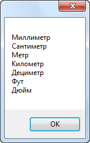

Пример 1 |
В данном примере рассмотрена работа со стандартным классом фильтра DOCs
TFlex.DOCs.Model.SearchFilter
Ниже показано, как создать экземпляр данного класса и воспользоваться им для фильтрации объектов стандартного справочника "Единицы измерения" по типу
C#
using System.Collections.Generic; using System.Linq; using System.Text; using TFlex.DOCs.Model.Classes; using TFlex.DOCs.Model.Macros; using TFlex.DOCs.Model.References.Units; using TFlex.DOCs.Model.Search; using TFlex.DOCs.Model.Structure; public class WorkWithFilter : MacroProvider { public WorkWithFilter(MacroContext context) : base(context) { } public override void Run() { UnitReference unitReference = Context.Connection.References.Units; // Создаем экземпляр справочника «Единицы измерения» ClassObject typeLength = unitReference.Classes.Length; // Находим тип «Длина» using var filter = new Filter(unitReference.ParameterGroup); // Создаем фильтр //Добавляем условие поиска - «Тип = Длина» filter.Terms.AddTerm(unitReference.ParameterGroup[SystemParameterType.Class], ComparisonOperator.Equal, typeLength); // Получаем список объектов (в качестве условия поиска - сформированный фильтр) и приводим к типу «Единицы измерения» List<Unit> units = unitReference.Find(filter).OfType<Unit>().ToList(); // Выводим наименования var strBuilder = new StringBuilder(); foreach (Unit unit in units) { strBuilder.AppendLine(unit.Name); } Сообщение("Работа с фильтром", strBuilder.ToString()); } }
Результат:
